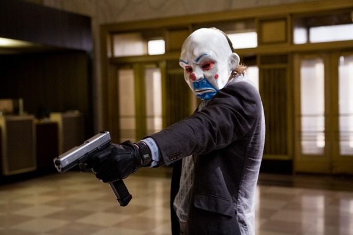
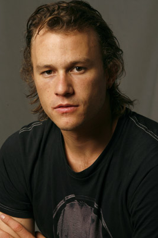

The Dark Knight
In the past few years, superhero movies have been dominating the movie industry. Many superheroes went from comic books onto the screen.Over the past decade, it seems that it is Marvel that led the entire industry. The series of the Marvel Universe have been pushing viewers from all walks of life into the theater, providing astonishing effects for the fans’ eyes and ears. Although there are tons of superhero movies now, it is commonly recognized that “Batman – The Dark knight” directed by Christopher Nolan, where Heath Ledger played the Joker remains the best superhero movie throughout the past few decades.
Summary

Joker in the bank
The story begins with a bank rob, where the Joker, the head of the team, betrays all the other teammates, kills them all and rob away all the gangsters’ money. After that, the Joker asks the gangsters to collaborate against Batman and at the same time challenges that whether Batman reveals his identity or the Joker will keep killing innocent people.Consequently, Batman and Harvey Dent, a prosecutor viewed by the citizens of the Gotham City as the Light Knight, together with Gordon, the Commissioner of the police, come up with a plan and successfully arrest the Joker on his way seeking for the Batman. However, it turns out that getting arrested is in the Joker’s plan.
Batman v.s. Joker
The Joker escapes from the jail and kidnaps Harvey and Rachael, Batman’s lover, at two separate places. The Joker tells Batman the two places where the two is kidnapped and lets Batman to choose between the two. Batman chooses to save Rachael, but the Joker actually switch the two addresses. As s result, Batman saves Harvey and Rachael dies from a massive explosion. Although Harvey survives, he loses half of his face from the other explosion of the kidnapping too. The Joker then meets Harvey secretly and successfully drives him crazy. Harvey starts to kill people and kidnaps Gordon’s family. At the same time, the Joker reveals that there is going to be a massacre in the Gotham City, which causes chaos and drives people into escaping. When the people go on a ship and the prisoners go on another in order to leave, the Joker announces his final trick.
Fallen Harvey Dent
There are bombs on both ships and the trigger for the bombs on the ship with citizens is on the ship with the prisoners, and vice versa; the Joker also has the trigger of the two ships, if there is no ship be blown before midnight, the Joker will blow both ships up by himself. Luckily, both the citizens and the criminals refuse to press the button and Batman successfully beats Harvey, saves Gordon’s family and takes the Joker down before he blows the two ships up. In the end, in order to remain Harvey’s name, Batman chooses to takes on what Harvey has done and lives in the dark, being the Dark Knight.
Christopher Nolan
Christopher Nolan
Nolan’s Batman series contains three movies, and The Dark Knight is the second one, and is also regarded as the most successful one. There are many reasons behind the success of this movie. First of all, known as one of the greatest directors around the world, the directing skill of Nolan and the messages that he wanted to send to the world through this movie served as a milestone in the field of the superhero movie industry. In comparison with the superhero movies nowadays, The Dark Knight did not apply fancy sound or visual effects, which are nowadays, probably one of the most important elements in recent superhero movies. However, the arrangement of the story, the building of the tension, the surprising outcome of the next scene had captivated everyone’s attention. To this day, The Dark Knight may still be the only one “black” superhero movie. Unlike other superhero movies, which mostly dealt with the bright side of the main character, depicting stories about how he or she rises from the bottom to the top, fighting the evil and help others, The Dark Knight told a darker story. In the story, the main character, Batman, is faced with a lot of traps throughout the movie, and those traps are set for Batman in order to trick him into breaking his own rules, such as never kill people as well as always be selfless. In this way, Nolan shew through this movie that even the so-called heroes are not always 100% good; when it comes to personal interests, everyone is likely to be selfish.
The Joker
the Joker in DC
On the other hand, another significant factor for the huge success of The Dark Knight is the Joker. The Joker is the one of the major villains in the Batman series comic books. Having remained the most attractive villain over the entire superhero story industry ever since he was created, the Joker literally “lives” at the top1 of the popularity rank for the villains. The Joker is different from other villains against superheroes. Normally, the villains tend to physically do harm to people, such as robbing or killing, and those villains usually commit crimes by themselves. However, the Joker is at the different level. Instead of hurting people directly, the Joker likes to set traps, and his favorite trap is to set people into dilemmas. The dilemmas are some situations that challenge the character of people. In the movie, we can see that the Joker challenges Batman to kill him, save Rachael, his lover, instead of Harvey Dent, the Light Knight of the Gotham City. Moreover, the Joker goes further and challenges the citizens and the criminals on the two ships whether or not to trigger the bombs and kill everyone on the other ship. We can see that the Joker loves to create chaos and trick people into his traps. In other words, normal villains hurt people, whereas the Joker destroys minds.
Heath Ledger

Heath Ledger
Although the Joker himself is already attractive, it was a 28-year-old actor that brought the Joker up to another level. Heath Ledger was an Australian actor; he played the Joker for The Dark Knight. After getting the role, Heath Ledger locked himself along inside a small room for over 40 days, for the purpose of studying the mental condition of the Joker and looking for the best way to play the role out. In order to present the accent and the tone of the Joker, Heath had to maintain moisture in his lips. As a result, he kept licking his lips while shooting the movie, and this became one of the most iconic signs of the Joker in The Dark Knight. The interpretation of Heath Ledger’s Joker was so impressive that all the actors were somewhat be afraid of him during the shooting. For the viewers, the Joker in The Dark Knight has created so much remarkable scenes. The crazy laughter and facial expressions, the classical “Why so serious?” and “How can you spell slaughter without laughter?” have long carved into all the viewers’ hearts. Unfortunately, Heath Ledger died from drug abuse on January 22, 2008, six months before the release of The Dark Knight. It is such a tragedy that Heath could never know that his Joker has received worldwide recognition and that he won the Academy Award for Best Actor in a Supporting Role as the Joker. Note that the death of Heath Ledger was so sensational that rumors were that Heath died because he was haunted by the character as the Joker.
Personal Feelings
For me, The Dark Knight is a lot more than a superhero movie. This movie is more likely telling a story and sending its messages through the entire story, it is called the superhero movie just because the main character is a superhero. Although The Dark Knight is a Batman movie, I tend to say that the Joker is the main character. According to Nolan, he thought that the Joker knows Batman the best, even better that Batman himself, and this is why the Joker can trick Batman into his traps every time. Throughout the movie, Nolan kept sending messages through the Joker instead of Batman. The Joker notes that people do not truly “love” Batman; instead, they just occasionally “need” him. Whenever the Gotham City is out of need of Batman, he will become a mere “freak”, being discarded by people, just like the Joker himself. The Joker also notes that there are no better weapons than “fear”. According to the Joker, when it comes to fear, the “civilized” people will start to eat each other. If we say that Batman represents the bright sides of people, then the Joker will be the embodiment of the pure dark sides of people. However, unluckily, it is clear from the kidnapping of Rachael and Harvey that even such a superhero like Batman cannot be 100% selfless; it is also clear from the downfall of Harvey that people can become evil easily no matter how kind they used to be.
On the other hand, Batman’s ways against the Joker bring up another issue, which is the definition of justice. In the last part of the movie, in order to stop the Joker from blowing the ships, Batman is in urge to find him. As a result, Batman hacks into all the mobile phones in the Gotham City and turns them into microphones to receive all the voice and search for the Joker’s voice and hence locate him. Although Batman saves the entire city, the fact that he hacks into all the citizens’ mobile phones cannot be neglected. It is such an interesting question that whether Batman’s decision to invade in the privacies of the citizens is proper. It turns out that things become really tricky when the so-called “justice” requires some “flaw” as the costs.
Last but not least, the movie also points out a serious problem that cam barely be seen throughout the superhero movie industry, the “reliance on the heroes”. In the end of the movie, Harvey Dent, one of the kindest people with a sense of justice, fails to remain good and falls into feelings of loss and regret, and finally becomes a pure machine that is born for revenge. Even one of the best men can easily become evil within a blink, with just a little push, which is, in this story, the Joker’s words. This message is probably the one and only among all the superhero movies, and it is quite interesting that we have a superhero movie doubting the reliance of heroes, and it is also the reason why I think that the Joker is actually the main character of The Dark Knight.
Having watched The Dark Knight for more than 10 times, I can still learn something from the movie. Although it is a rather old movie, in terms of the superhero topics, the aspect of this movie is still pretty fresh and impressive to this day. No matter how fancy the effects of the superhero movies nowadays apply, or how strong of the new heroes are, the Dark Knight will 100% remains at the top 1 superhero movie in my heart.
 中文
中文